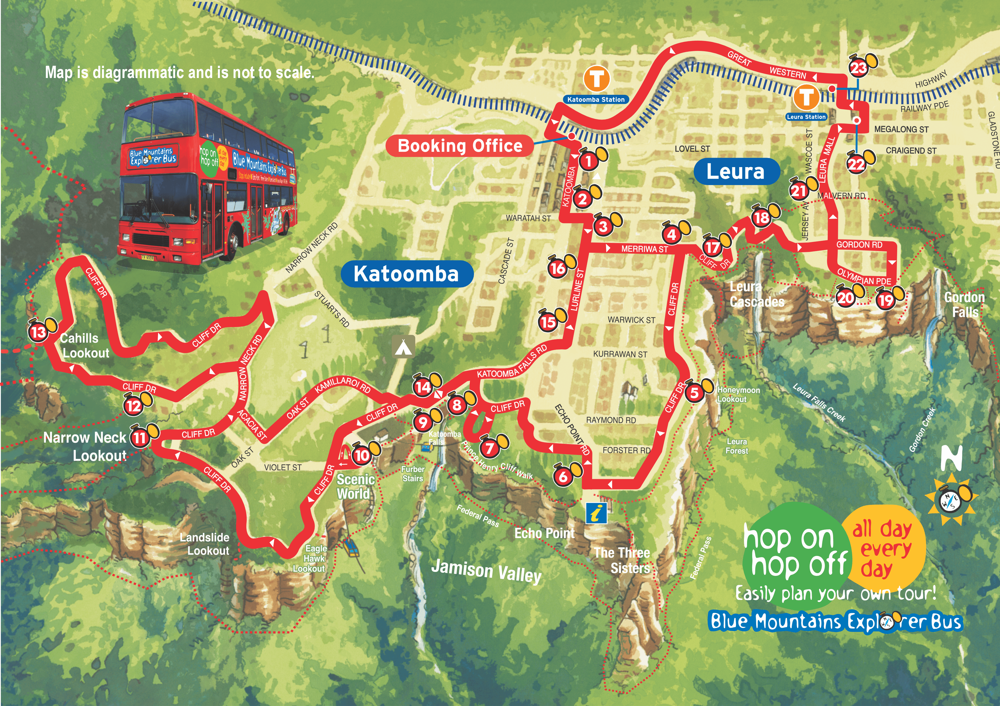

07:05–07:15
1
Centralを07:24発のBMTで出発し、Katoomba到着後はBlue Mountains Explorer Busを主な移動手段として使います。09:45のStop 1から乗車 → 10:05 Scenic World → Railway → 谷底Walkway → Cableway → Skyway East Station → 徒歩でEcho Point → 昼食 → Giant Stairway往復 → 14:25 Echo PointからExplorer Bus → Katoomba Falls（Stop 7）→ 15:45 Leura Village。Leuraを散策し、16〜17時台に山を離れる構成です。
Explorer Busの停留所順と、Scenic World・徒歩区間の接続が分かるようにした模式図です。
①〜⑬は概略図・詳細カードと共通です。赤い行＝Explorer Bus、オレンジの行＝徒歩、青い行＝BMT、紫の行＝Scenic Worldの乗り物です。
概略図・時刻表・詳細カードは①〜⑬の同じ番号で対応しています。時刻表をクリックすると対応カードへ自動スクロールし、詳細が開きます。

Central StationのEddy Avenue側にある早朝営業のテイクアウト候補。日曜は5:00〜20:00の掲載があり、7時台のBlue Mountains行きでも余裕を持って利用できます。
この日の使い方：7:05頃にサンドイッチ／ロール＋コーヒー等を購入し、07:24のBMTに乗車。朝食は車内で取り、Katoomba到着後はそのままScenic Worldへ向かいます。
1 · ☕ · 07:05–07:15 · テイクアウト
Katoomba駅到着後、Explorer Busオフィスで当日の運行間隔とStop 1の出発時刻を確認します。下の路線図では、今回使うStop 1 → Stop 10とStop 6 → Stop 22を確認できます。
2 · Katoomba / Explorer Bus Stop 1

Explorer BusのStop 10で下車。ここを起点にRailway → Scenic Walkway → Cableway → Skyway East Stationの順で移動します。エリアマップで乗り場の位置関係を確認できます。
3 · Scenic World / Stop 10

世界でも特に急勾配の旅客鉄道として知られ、公式では52°の傾斜を案内しています。今回は上から谷底へ下る方向で利用します。
見るポイント：急勾配そのものと、崖から熱帯雨林へ一気に高度を下げる感覚。朝いちに乗ることで待ち時間を抑えます。
4 · 10:15頃
Scenic Railwayの下駅から、熱帯雨林の谷底を歩いてCableway下駅へつなぐ区間です。この日は午後にGiant Stairwayがあるため、長い周回ではなく短いルートを基本にします。
移動種別：ここは徒歩です。Railwayを降りたあとに歩き、Cablewayへ乗り継ぎます。
5 · 🚶 WALK · 10:30–10:50
谷底から崖上へ戻る空中ケーブル。公式では南半球でも特に急なCablewayとして案内され、Three SistersやOrphan Rock、Jamison Valleyの景色を楽しめます。
今回の役割：Railwayで下った後に、徒歩で登らず体力を温存してTop Stationへ戻ること。
6 · 10:55頃
世界遺産の熱帯雨林上空約270mを横断するSkyway。公式ではEast Station側との便は通常10分間隔と案内されています。
今回の使い方：Top StationからEast Stationへ抜け、Scenic Worldを往復せず、そのままEcho Point方向へ進みます。
7 · 11:15頃
Three Sistersを正面から見る定番展望地点。ここからThree Sisters Walkを経由してGiant Stairway上部へ向かいます。
見るポイント：Three Sisters、Jamison Valley、対岸の崖。Giant Stairway前の最後のまとまった休憩・水分補給地点として使います。
8 · 12:10頃
Echo Pointの展望地点にあるため、今回のルートから寄り道せず昼食を取れます。公式案内は毎日11:00〜18:00頃。Giant Stairwayの直前なので、40分程度で食べ終える前提です。
この日の使い方：Three Sistersを見た後に昼食。バーガー、Fish & Chips、Salt & Pepper Squid等の現行メニューがありますが、午後の長い階段下りを考えて食べ過ぎない量にします。混雑時はMilkbar（毎日9:00〜17:00）のテイクアウトへ切替。
9 · 🍽 · 12:20–13:00
公式ではEcho Pointから上部まで約450m。階段自体は非常に急で、今回は往復の上部体験として、体力に合わせて折り返します（Federal Passへは進みません）。
注意：濡れた階段、強風、脚の疲労に注意。折り返しの体力を残した状態で引き返すこと。Honeymoon Bridgeは現行アラートで閉鎖中です。
10 · 13:00–14:10 · Grade 4 往復
Katoomba Cascadesから断崖を落ちていく滝で、Jamison Valleyへ向かう水の流れをそのまま見下ろせます。Explorer BusではEcho Point（Stop 6）の次のStop 7にあたるため、Leuraへ向かう周回ルート上でそのまま途中下車できます。
今回の役割：Giant Stairwayで階段を使ったあとの、負担の少ない締めの展望スポット。展望台までは比較的平坦です。徒歩派はEcho PointからPrince Henry Cliff Walkで約30分でも到達できます。
11 · 14:30–15:05 · Stop 7
Explorer Busで15:45頃に到着する山間の街。Leura Mallのショップやカフェを約45分散策し、Leura駅からBMTでSydneyへ戻ります。
今回の役割：Blue Mountains観光の最後の立ち寄り地点。時間が押している場合は散策時間を短縮して、16〜17時台に山を離れることを優先します。
12 · 15:45–16:30
Central Station帰着後にそのまま歩いて向かえるタイ料理店。2026年7月更新の掲載では毎日11:00〜22:30で、Blue Mountainsからの帰着が多少遅れても利用しやすいです。
おすすめ：店名にもなっているKhao Man Kai（蒸し鶏＋ガーリックライス）。しっかり食べたい場合は、蒸し鶏・揚げ鶏・グリルなどから2種類を組み合わせられるCombinationも候補です。
13 · 🍚 · 19:00頃9/20は日曜日です。ブルーマウンテン方面は週末Trackworkの影響を受けることがあるため、以下3段階で確認してください。
数週間〜数か月先の「予定」を確認するものです。Sydney Trainsだけでなく、Sydney MetroやIntercityも対象です。ただし公式にも 「guide only / subject to change（あくまで予定で変更あり）」 と明記されています。
日程が近くなったらこちらのほうが重要です。路線ごとの運休区間、代行バス、時刻変更などが掲載されます。
実際の日付・出発駅・到着駅を入力すると、Trackworkを反映した経路が出ます。公式も「Trackwork時の代替ルート確認」にTrip Plannerを使うよう案内しています。
Transport for NSWは、planned trackworkは通常最大2週間程度前から利用可能と案内しています。旅行直前にはFuture CalendarではなくTravel AlertsとTrip Plannerを優先してください。
公式ではEcho Pointから上部まで約450m。階段自体は非常に急で、今回は往復の上部体験として、体力に合わせて折り返します（Federal Passへは進みません）。
Scenic World公式FAQでは通常の週末営業時間を9:00〜17:00としていますが、営業時間は時期で変動します。9/20のチケット画面でセッション時刻を確定してください。
歩きやすい靴、水、軽食、薄手の防寒、雨具、モバイルバッテリー。山上はSydney CBDより体感温度が下がりやすく、Giant Stairwayでは両手が空くバッグが楽です。